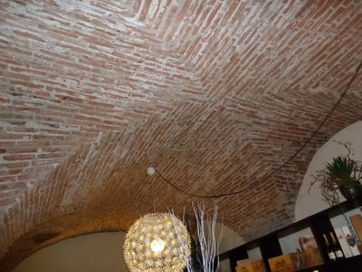

Bóvedas de mampostería [FM1]
Vanos de mampostería entre muros portantes superpuesto y rellenos. Se dispone una superficie plana y frecuentemente está superpuesta al sistema de piso. Incluye bóvedas en dos sentidos y domos de mampostería.

Bóveda de mampostería de ladrillo (M. Lutman)

Bóveda doble de mampostería de ladrillo, Italia (S. Brzev)

Bóveda doble de mampostería de piedra, Portugal (S. Brzev)